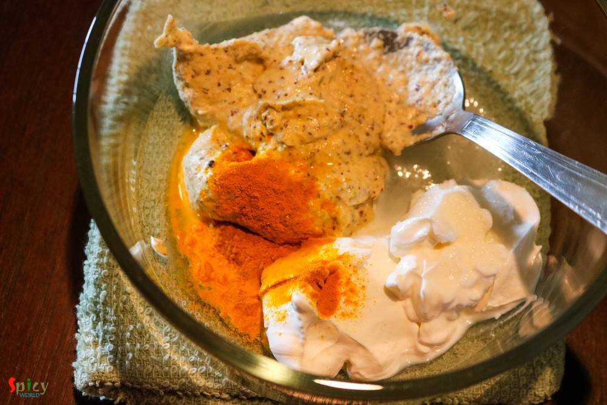
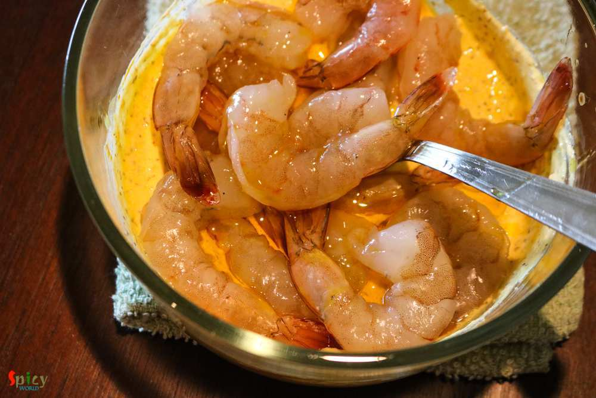
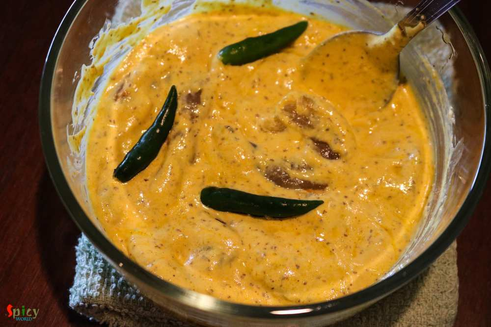
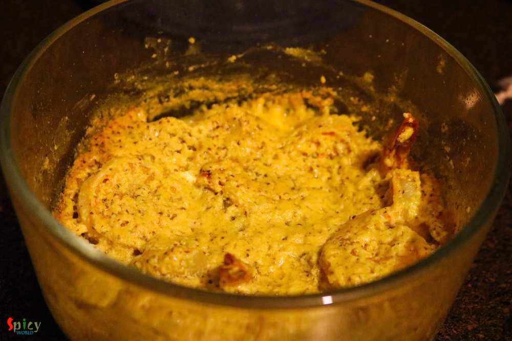

Simple and Easy Recipes
Sorshe Chingri Bhapa / Steamed Prawn in Mustard gravy
© 2016 Spicy World, Published on: Jul 18, 2016
There are so many fish curry recipes in Bengali cuisine which calls for 'mustard' / sorshe, but this particular item is a jewel because you can cook this in microwave within 5 minutes.Yeaah you read it right ! With some steamed rice this 'sorshe chingri bhapa' tastes best. If you are a shrimp lover and also don't know about this dish, then trust me and give it a try ... you can thank me later !

Ingredients
- 15 pieces of cleaned and deveined prawns / shrimps.
- 3 Tablespoons of fresh mustard paste.
- 2 Tablespoons of curd.
- 2 Tablespoons of mustard oil.
- Salt and sugar.
- 1 Teaspoon of turmeric powder.
- 3 green chilies.


Steps
To make the mustard paste - soak the mustard seeds in water for 1 hour. Then grind them with some salt, green chilies and water.
Take a microwave proof bowl. Put curd, mustard paste, salt, pinch of sugar and turmeric powder.
Then add the shrimps and 1 Tablespoon of mustard oil. Mix well.
Lastly add the green chilies.
Cover the bowl half with a lid and microwave it for 3 minutes.
Gently stir them with a spoon, sprinkle very little water and again microwave it for 2 minutes.
Give it a stir and another 30 seconds will be good.
Different microwave oven has different temperature. So, keep an eye on it while cooking.
Lastly drizzle some more mustard oil and serve immediately with steamed rice.
Your sorshe chingri is ready ...
Serve this hot with some plain rice ...
")